Ⅰ Introduction
The M-score is composed of modules such as mass size, erythema, fistula/ulceration, pain or tenderness, and impact on quality of life, and is used to describe the patient's current disease severity. The M-active-score focuses specifically on manifestations of inflammatory activity (erythema, fistula/ulceration, tenderness).
Figure 1 — M-Score assessment framework overview.
Ⅱ M-Score Module Definition
1. Mass Size
Measure the greatest diameter of the breast lump. During the examination, use four fingers held together to palpate gently, starting with the unaffected side and then the affected side, and examining the normal areas before the affected areas. If there are multiple lumps, add their greatest diameters together.
This applies only to lesions detectable on physical examination; lesions identified solely on imaging are excluded; nodules resulting from normal glandular hyperplasia or fibroadenomas are not counted.
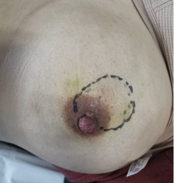
| Score | Examination result |
|---|---|
| 0 | No palpable mass |
| 1 | Palpable mass ≤ 3 cm |
| 2 | Palpable mass > 3 cm |
2. Erythema
The examination focuses primarily on visual inspection, taking current symptoms into account. Palpate the skin over the affected area and compare it with the surrounding healthy skin to determine whether there is any redness or warmth.
Capillary refill (blanch test): Gently pressing the centre of the erythema; when the finger is removed, the skin at the site of pressure changes from white to red, indicating active erythema. This must be distinguished from post-recovery hyperpigmentation.
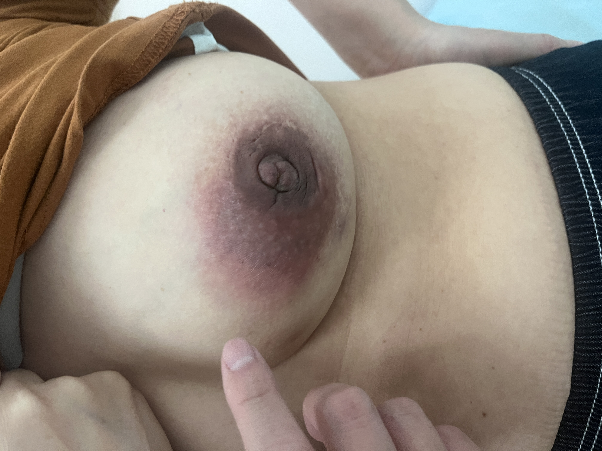
| Score | Examination result |
|---|---|
| 0 | No active erythema |
| 2 | Active erythema present |
3. Fistula / Ulceration
Check the breast for any skin breakdown or fistulae. This is primarily a visual examination, and the patient should be asked about any discharge of pus and the healing process since the last assessment.
If no fistula is present at the initial consultation, a sinus tract caused by puncture is not considered to constitute the formation of a fistula.
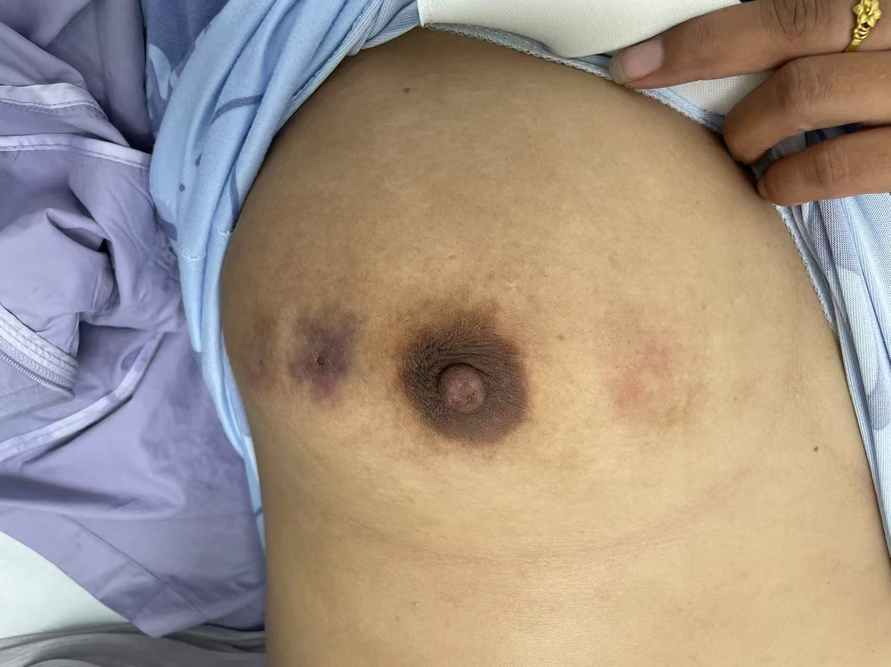
| Score | Examination result |
|---|---|
| 0 | No fistula / ulceration |
| 1 | Purulent discharge reported in the past week, but not observed on examination |
| 2 | Ulceration and purulent discharge observed on examination |
4. Pain / Tenderness
The Visual Analogue Scale (VAS) was used. A score of 0 indicates no pain, whilst a score of 10 indicates an unbearable, intense pain unlike anything previously experienced.
The M-score-a is based on the patient's current subjective pain; the M-score-t is based on tenderness detected on physical examination. At each assessment, it is recommended to remind the patient of their previous VAS score, or to use the corresponding area on the opposite breast as a 0-point reference.
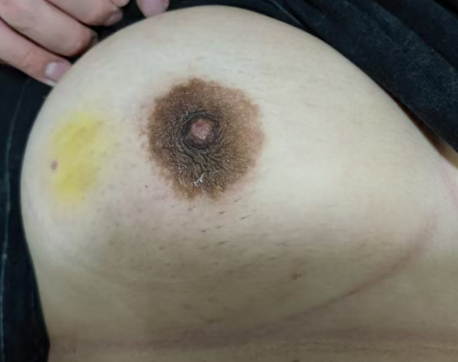
| Score | Examination result |
|---|---|
| 0 | VAS 0–3 |
| 1 | VAS 4–6 |
| 2 | VAS 7–10 |
5. Quality of Life
Ask about the impact of the condition on the patient's quality of life, including work, daily activities, dressing, sleep, wound care and whether any medical intervention is required.
| Score | Examination result |
|---|---|
| 0 | No impact |
| 1 | Mild impact |
| 2 | Severe impact |
Ⅲ Calculation Rules
| Index | Formula |
|---|---|
| M-score-a | Mass + Erythema + Fistula/Ulceration + Pain (patient self-reported) + QoL |
| M-score-t | Mass + Erythema + Fistula/Ulceration + Tenderness + QoL |
| M-active-score | Erythema + Fistula/Ulceration + Tenderness |
| Resolution | M-score-t ≤ 1; if tenderness cannot be accurately assessed, use M-score-a ≤ 1 as reference |
| Inflammatory Remission | M-active-score = 0 |
Figure 2 — Relationship between M-score-a, M-score-t, and M-active-score.
Ⅳ Online Scorer
Please select the score for each item; the system will automatically calculate the M-score-a, M-score-t and M-active-score.
Ⅴ Clinical Image Atlas
Figures illustrating representative clinical presentations across M-score modules. Click any image to enlarge. All images have been de-identified.
Figure 3 — Mass size assessment examples
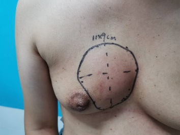
Example BFigure 4 — Erythema assessment examples (blanch test)
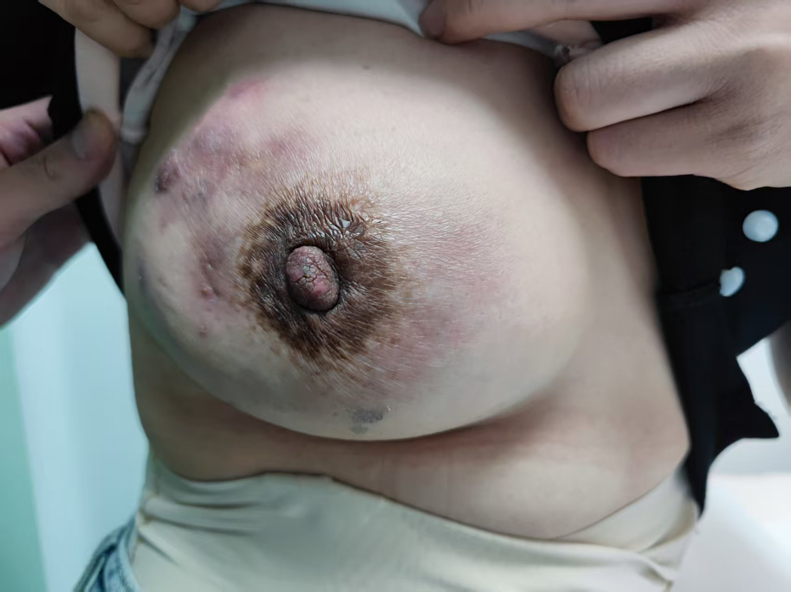
Example B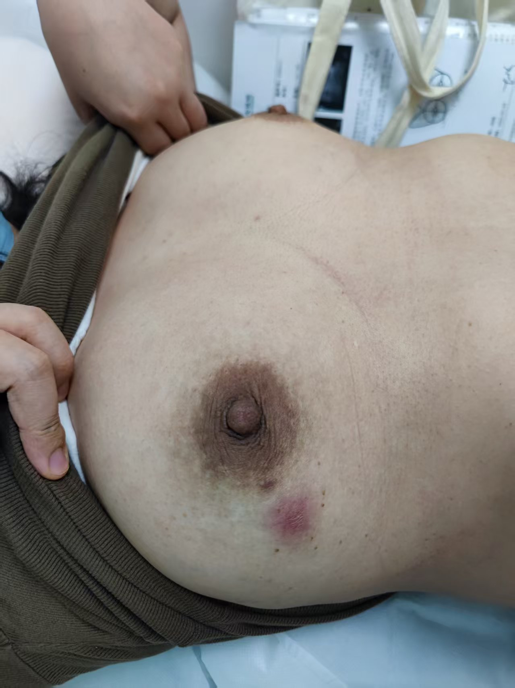
Example CFigure 5 — Fistula / ulceration examples
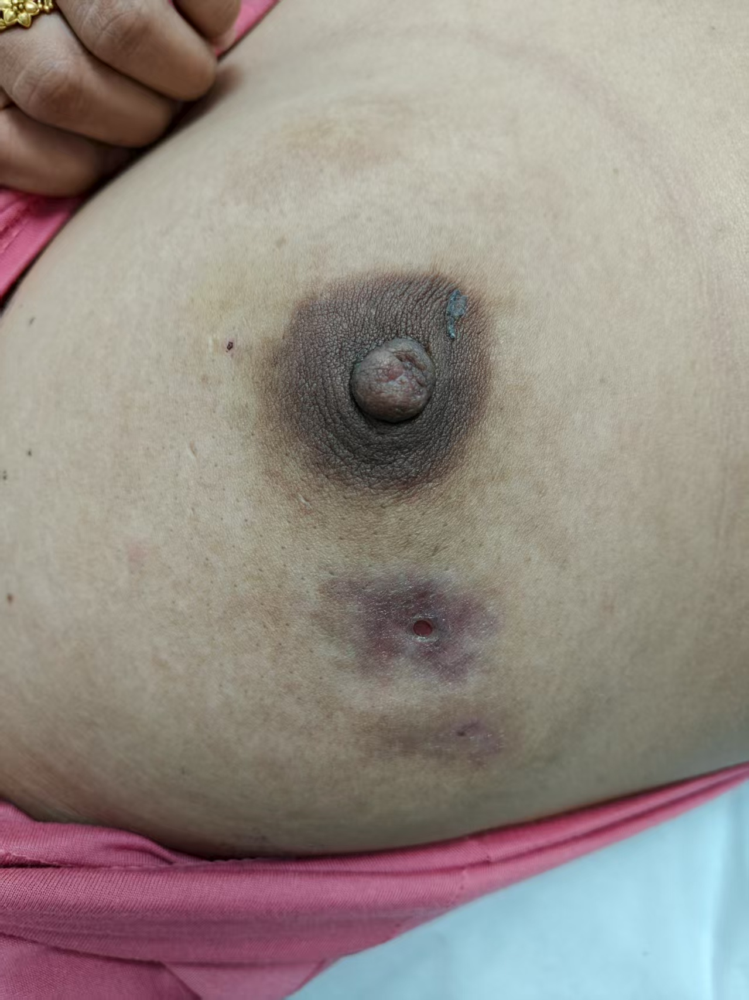
Example B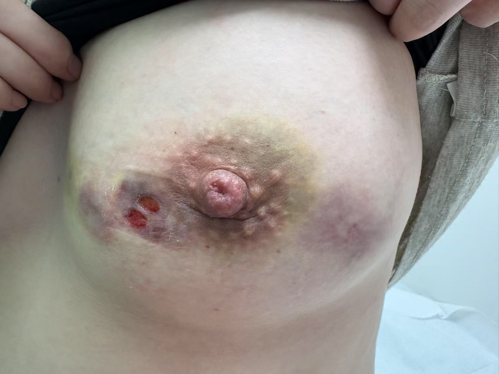
Example CFigure 6 — Differential diagnosis: active erythema vs. hyperpigmentation
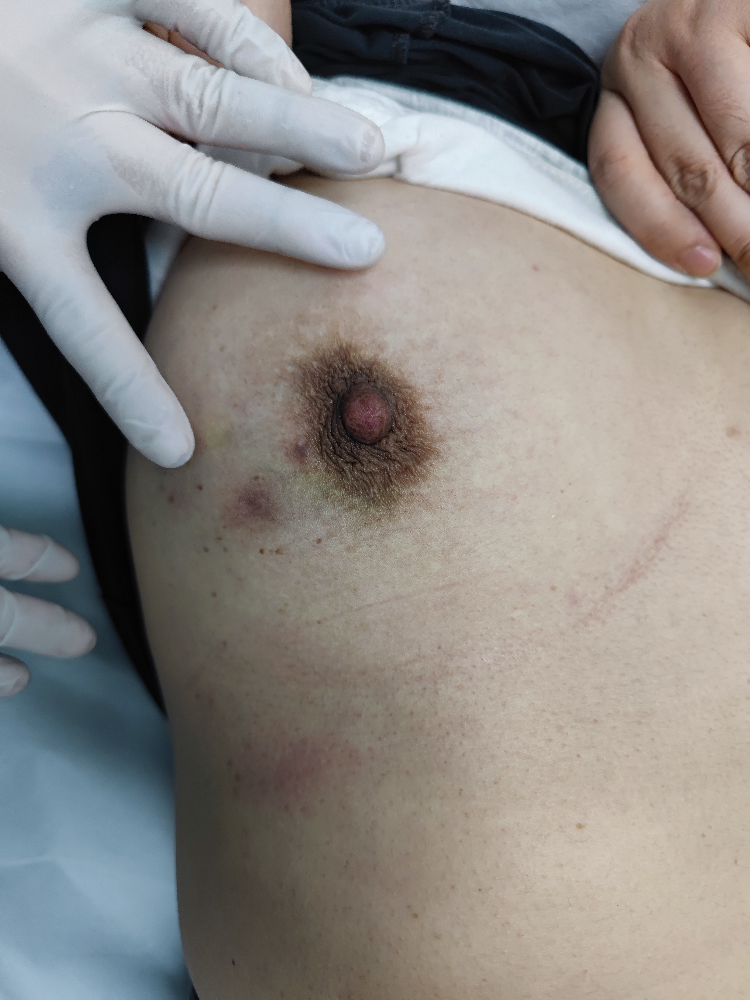
Hyperpigmentation A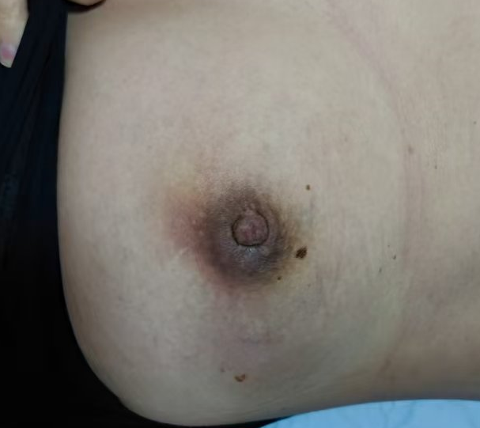
Hyperpigmentation BⅥ Erythema Assessment — Video Demonstration
The following videos demonstrate the standardised technique for the capillary refill test (blanch test), used to differentiate active erythema from post-inflammatory hyperpigmentation.
Ⅶ Case Training
After reading the case description and reviewing the clinical images, score each case independently before clicking "View the correct answers". Recommended for rater training and calibration.
Case 1
A 47-year-old woman presented with a six-month history of diagnosed non-lactational mastitis. An ultrasound scan revealed a 4 × 4 cm benign mass; the patient underwent an intra-lesional injection one week ago. Physical examination: On palpation, the mass measured 6 × 4 cm; the capillary refill sign was negative; a scab was visible at the site of the intra-lesional injection; there had been no ulceration or pus discharge in the past week; the patient rated her pain as 3 and tenderness as 4; she experienced occasional stabbing pain during daily work and activities; frequent wound care was not required; and her quality of life was mildly affected.
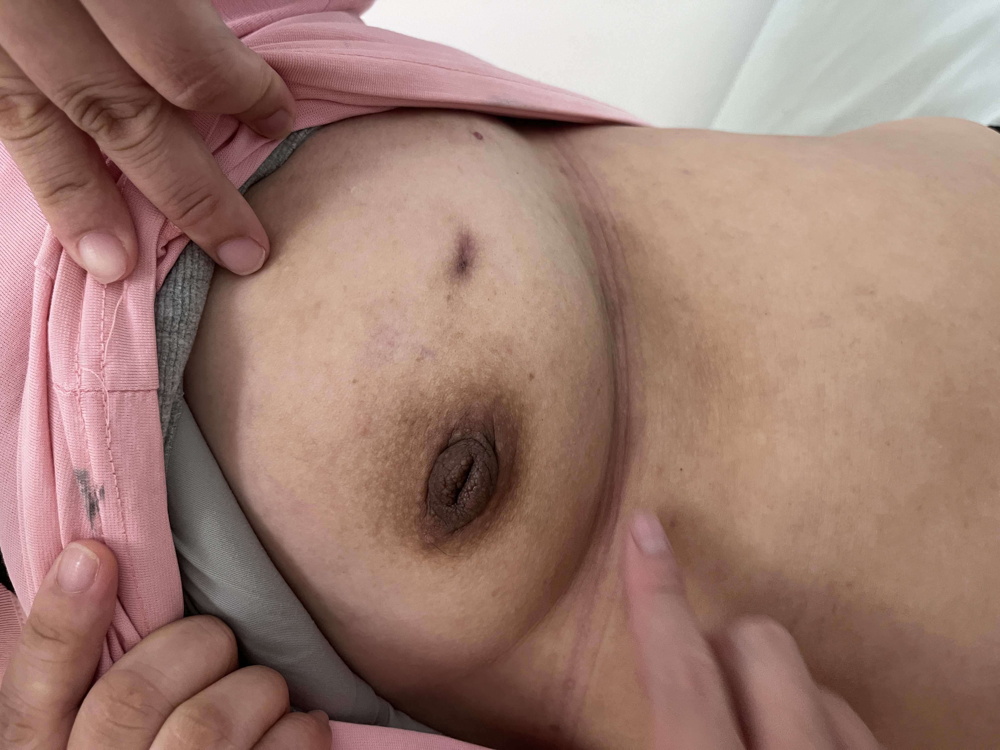
M-score-a = 3 — Mass 2 + Erythema 0 + Fistula/Ulceration 0 + Pain (self-reported) 0 + QoL 1
M-score-t = 4 — Mass 2 + Erythema 0 + Fistula/Ulceration 0 + Tenderness 1 + QoL 1
M-active-score = 1
Interpretation: The injection site has formed a scab; no ulceration or pus discharge for nearly a week, indicating a tendency towards healing — fistula/ulceration scored as 0. Mild skin bruising post-injection, no active inflammation, capillary refill negative — erythema scored as 0. Residual tenderness prevents M-active-score from reaching 0.
Case 2
A 33-year-old woman presented with a one-year history of diagnosed non-lactational mastitis. An ultrasound scan revealed a 2 × 3 cm benign mass; the patient had not received any treatment in the past six months. Physical examination: on palpation, the mass measured 2 × 2 cm; there was no capillary refill sign; the skin appeared normal; the patient reported a pain score of 0 and tenderness of 0; there was no impact on her daily work or life, and her quality of life was unaffected.
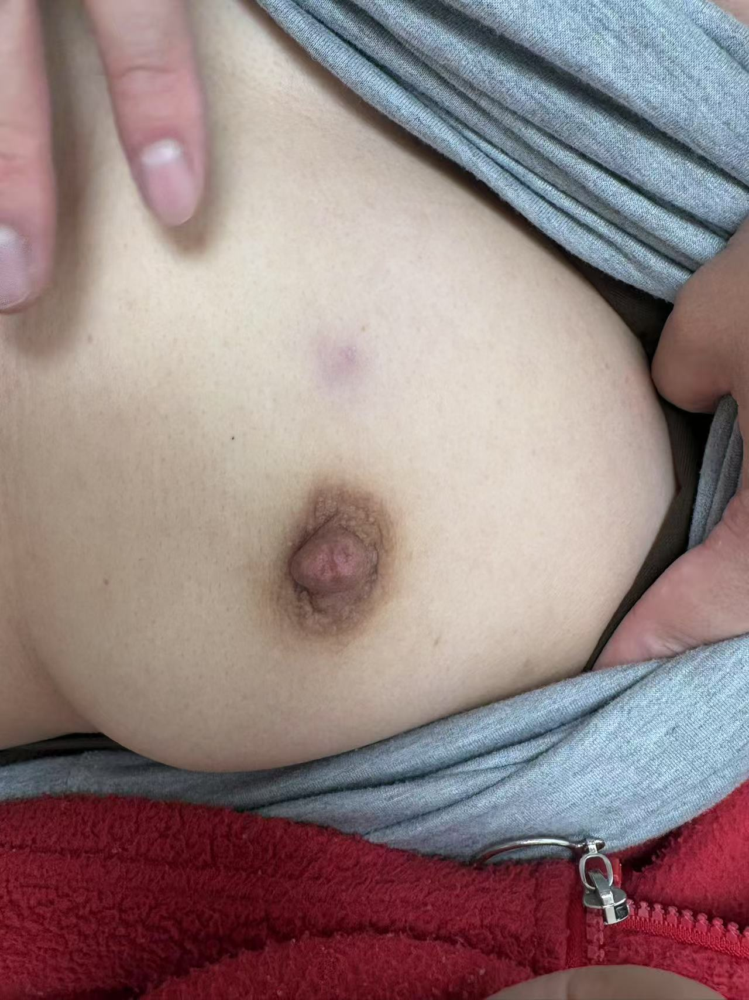
M-score-a = 1 — Mass 1 + Erythema 0 + Fistula/Ulceration 0 + Pain (self-reported) 0 + QoL 0
M-score-t = 1 — Mass 1 + Erythema 0 + Fistula/Ulceration 0 + Tenderness 0 + QoL 0
M-active-score = 0
Interpretation: The patient shows no signs of active inflammation. M-score-t = 1 ≤ 1 → Resolution; M-active-score = 0 → Inflammatory Remission. Both endpoints are met, indicating well-controlled disease.
Case 3
A 35-year-old woman presenting with a three-month history of diagnosed non-lactational mastitis. Ultrasound revealed a 5 × 8 cm benign mass. The patient has undergone two weeks of anti-tuberculosis treatment with poor results. Physical examination: Palpation revealed a mass measuring 8 × 6 cm with positive capillary refill. The skin over the mass had ulcerated. The patient rated her pain as 7 and tenderness as 10. She frequently needs to dress the wound in her daily life; at its worst, she finds it difficult to change her clothes and has trouble sleeping. She feels anxious about her condition, and her quality of life is significantly impaired.
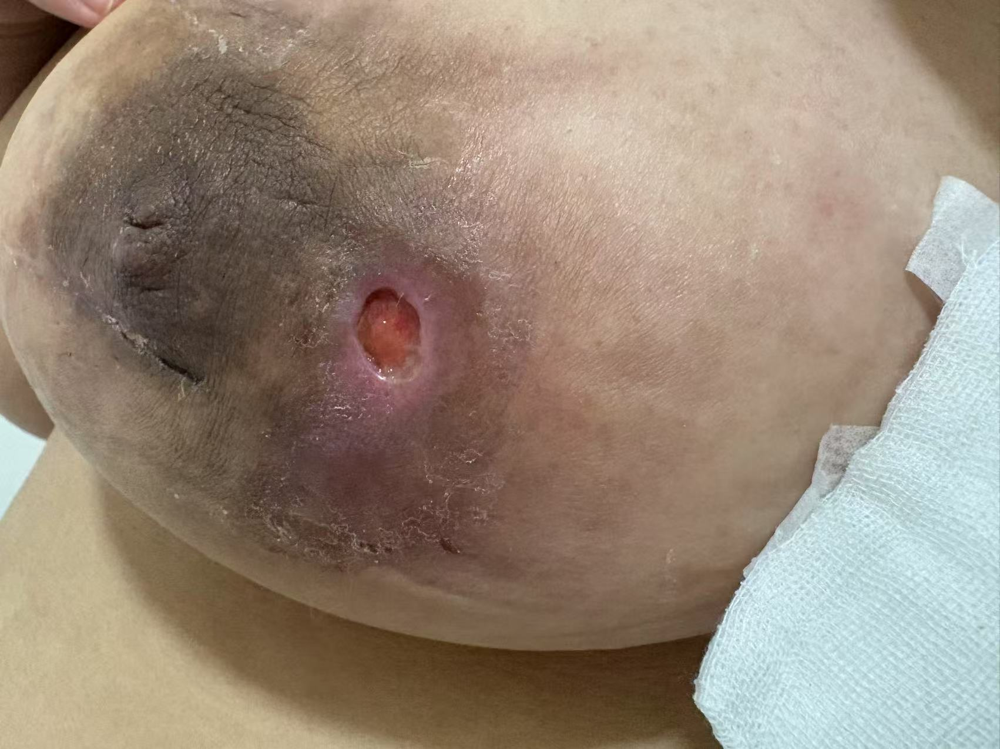
M-score-a = 10 — Mass 2 + Erythema 2 + Fistula/Ulceration 2 + Pain (self-reported) 2 + QoL 2
M-score-t = 10 — Mass 2 + Erythema 2 + Fistula/Ulceration 2 + Tenderness 2 + QoL 2
M-active-score = 6 (maximum)
Interpretation: The patient presents with a large mass, active erythema, ulceration with purulent discharge, severe pain and marked impairment in quality of life — all three inflammatory activity items are at maximum score. This indicates severe disease requiring reassessment of the treatment strategy and consideration of escalated intervention.
Ⅷ Citation and Version Notes
Name: M-Score Clinical Assessment System
Version: Version 1.0
Usage: Clinical research, rater training, and educational purposes.
Suggested Citation Format:
Kai Chen. M-Score Clinical Assessment System — A standardised severity scoring system for non-puerperal / granulomatous mastitis. Version 1.0. [Year]. URL / DOI.